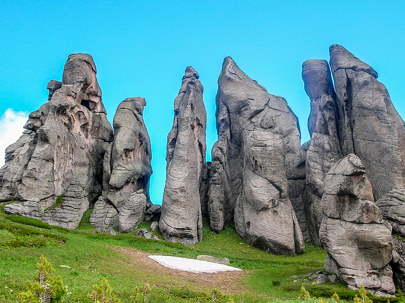

Батыс-Алтай мемлекеттік табиғи қорығы
Кенді Алтайдың солтүстік-батыс бөлігінде Шығыс Қазақстан облысының Риддер (Лениногор), Зырян, Глубокое (Орталық кеңсе-үй-жайы Глубокое ауданының Риддер қаласында орналасқан) аудандарының аумағында Поперечное ауылының оңтүстік-шығысында табиғатты пайдаланудан алынып қойылған жерлерде орналасқан. Батыс Алтай қорығының аудандастырылуы Оңтүстік-Cібір тау елдерінің Алтай провинциясына жатады. Қорықтың жануарлар дүниесін тайгалық жануарлар: бұлан, марал, елік, құдыр, қоңыр аю, құну, сілеусін, бұлғын, сасық күзен, аққалақ, қар күзен, кәмшат, тиін, шұбар тышқан, суыр, түлкі және әртүрлі кеміргіштер құрайды